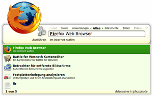
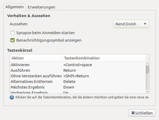
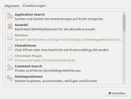

Synapse
Dieser Artikel wurde für die folgenden Ubuntu-Versionen getestet:
Ubuntu 16.04 Xenial Xerus
Ubuntu 14.04 Trusty Tahr
Zum Verständnis dieses Artikels sind folgende Seiten hilfreich:
 Synapse
Synapse  ist ein Anwendungsstarter für GNOME ähnlich GNOME Do oder der Funktion "Anwendung ausführen", die sich über
Alt +
F2 starten lässt. Synapse besitzt Erweiterungen, durch die es z.B. mit Banshee, locate oder Zeitgeist zusammenarbeiten kann.
ist ein Anwendungsstarter für GNOME ähnlich GNOME Do oder der Funktion "Anwendung ausführen", die sich über
Alt +
F2 starten lässt. Synapse besitzt Erweiterungen, durch die es z.B. mit Banshee, locate oder Zeitgeist zusammenarbeiten kann.
Installation¶
 Synapse ist bis Ubuntu 13.10 und ab Ubuntu 15.10 in den offiziellen Paketquellen enthalten und kann über das folgende Paket installiert [1] werden:
Synapse ist bis Ubuntu 13.10 und ab Ubuntu 15.10 in den offiziellen Paketquellen enthalten und kann über das folgende Paket installiert [1] werden:
synapse (universe)
 mit apturl
mit apturl
Paketliste zum Kopieren:
sudo apt-get install synapse
sudo aptitude install synapse
PPA¶
Alternativ kann man das "Personal Package Archiv" (PPA) [2] der Entwickler nutzen (wer Synapse mit Ubuntu 14.04 kombinieren möchte, muss das PPA verwenden).
Adresszeile zum Hinzufügen des PPAs:
ppa:synapse-core/ppa
Hinweis!
Zusätzliche Fremdquellen können das System gefährden.
Ein PPA unterstützt nicht zwangsläufig alle Ubuntu-Versionen. Weitere Informationen sind der  PPA-Beschreibung des Eigentümers/Teams synapse-core zu entnehmen.
PPA-Beschreibung des Eigentümers/Teams synapse-core zu entnehmen.
Damit Pakete aus dem PPA genutzt werden können, müssen die Paketquellen neu eingelesen werden.
Nach dem Aktualisieren der Paketquellen erfolgt die Installation wie oben angegeben.
Benutzung¶
 Hat man Synapse installiert, kann man das Programm bei Ubuntu-Varianten mit einem Anwendungsmenü über "Zubehör -> Synapse" starten. Anschließend kann man mit Strg + die Oberfläche aufrufen und eintippen, was man sucht. Durch einen einfachen Tastendruck von ↓ werden die zuletzt verwendeten Dokumente und - falls in Zeitgeist aufgezeichnet - Webseiten angezeigt. Per Tab ⇆ lassen sich weitere Aktionen des Eintrages anzeigen.
Klickt man oben rechts auf den kleinen Punkt, kann man das Einstellungsmenü aufrufen oder Synapse beenden. Dies funktioniert ebenso über das Symbol in der Benachrichtigungsanzeige. In den Einstellungen kann man sowohl das Tastenkürzel ändern als auch einrichten, dass Synapse automatisch startet. Außerdem können Erweiterungen aktiviert werden.
|  |
| Einstellungen - Aussehen und Verhalten |
|  |
| Einstellungen - Erweiterungen |
Links¶
Synapse oder Mein Lieblings-Programmstarter
- Blogbeitrag, 01/2013Synapse
- Blogbeitrag, 11/2010Docks und andere Anwendungsstarter
 Programmübersicht
Programmübersicht
- Erstellt mit Inyoka
-
 2004 – 2017 ubuntuusers.de • Einige Rechte vorbehalten
2004 – 2017 ubuntuusers.de • Einige Rechte vorbehalten
Lizenz • Kontakt • Datenschutz • Impressum • Serverstatus -
Serverhousing gespendet von